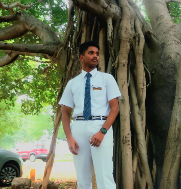
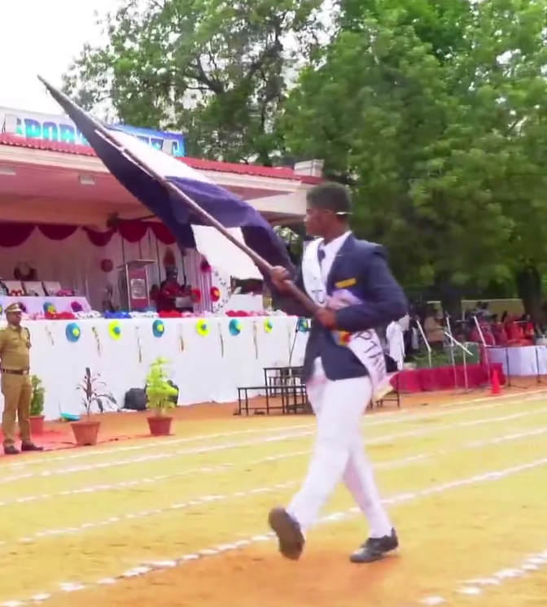
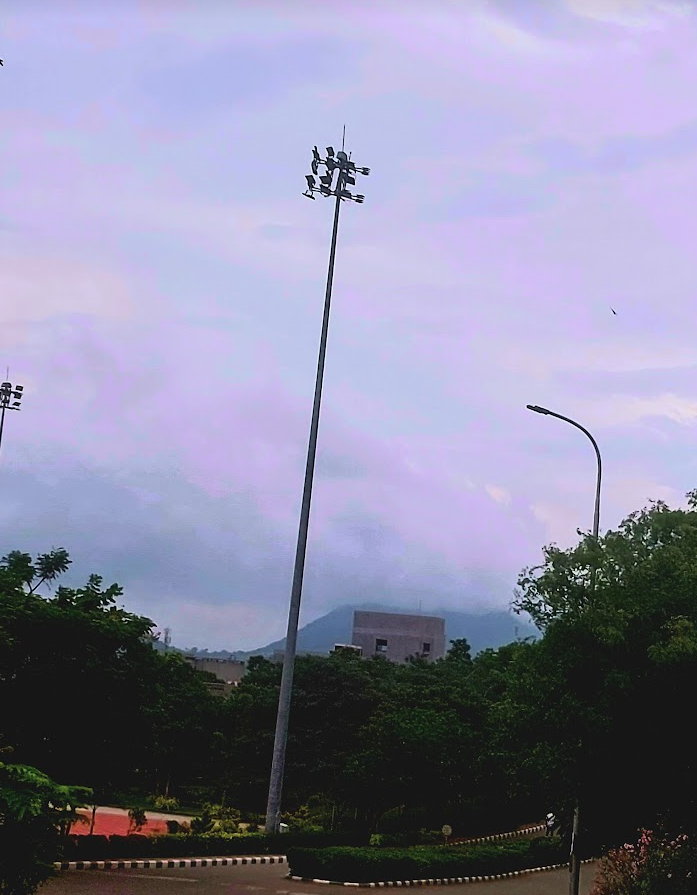
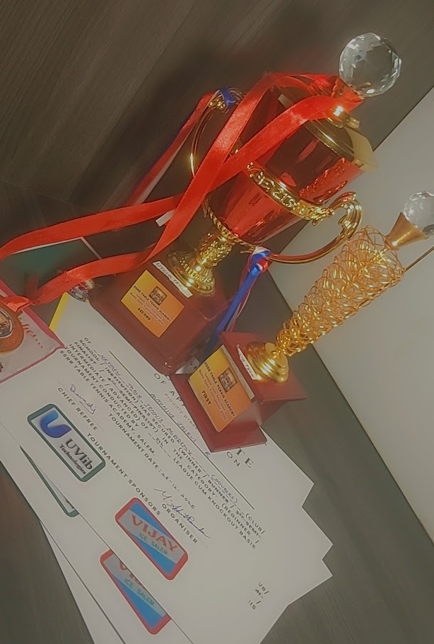

Campion Anglo-Indian Higher Secondary School, Trichy
HSC Certificate (82%) · Assistant Leader (2023-24) · School Pupil Leader (2024-25)
My academic journey began at Campion Anglo-Indian Higher Secondary School in Trichy — an institution that played a defining role in shaping my discipline, mindset, stage confidence, and competitive spirit.
The environment at Campion focused on building character and leadership alongside academics. I had the honor of leading the school as School Pupil Leader in my final year, representing the student body and coordinating major school initiatives.


I completed my 10th grade with 83.3% and 12th grade with 82%. Holding that school emblem and flag as School Pupil Leader taught me how to lead teams, communicate with clarity, and manage responsibility under pressure.
Campion is also where my Table Tennis journey began, representing the school across district, state, and national tournaments.
Sri Krishna College of Engineering & Technology (SKCET)
B.E. CSE (Cybersecurity) · CGPA 8.835 · Semester 2 Class Topper (9.50 GPA)
At SKCET Coimbatore, I am focusing on building technical depth in Computer Science and Cybersecurity. I maintained a CGPA of 8.835, securing 1st rank in Semester 2 with a GPA of 9.50.
My primary technical interests center around cybersecurity analysis, data structures & algorithms in C++, full-stack MERN engineering, and real-time telemetry systems.


Beyond academics, I am an active member of the College Student Council and IEEE team, working on technical conferences and publications. I also represent SKCET in Table Tennis, winning 3rd place in Zonals and ranking in the top 6 in Coimbatore District Men's Category.